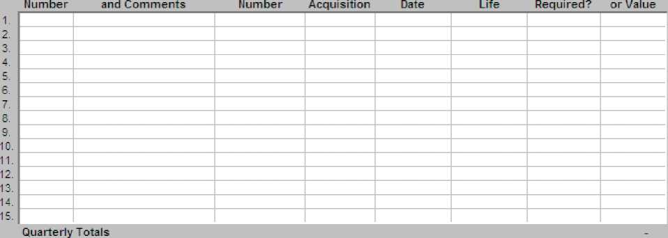
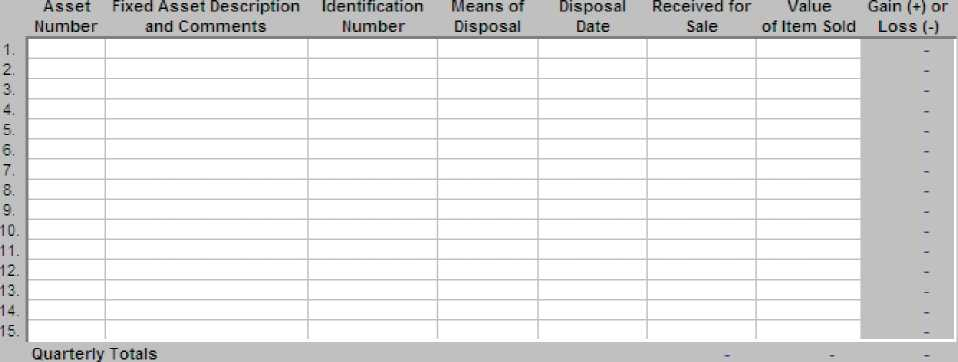

Accounting Instructions for Regional Building Committee of Jehovah’s Witnesses, Inc.
Monetary Contributions Received
Contributions of Equipment or Materials
Contributions to Local Office from Construction Projects
Appendices
6. Instructions for Completing Quarterly Regional Reporting Package... 17
The following procedures are intended as a supplement to the Regional Building Committee Accounting Manual (S-100) already being used by local Regional Building Committees. Appendices are provided to assist in following these procedures.
General guidelines and procedures outlined in the Regional Building Committee Accounting Manual should be followed as a guide to setting up and accounting for the activities related to the Regional Building Committee of Jehovah's Witnesses, Inc. (RBCJW). Each local Regional Building Committee will be considered an "office" of the corporation. All assets held by the office that are used to care for the Kingdom Hall construction under its jurisdiction are to indicate that RBCJW is the owner of the asset. This manual has been prepared assuming a "double entry" accounting system that can be readily maintained on a simple and inexpensive computer accounting program. If such a system is not available to the local office, sample accounting forms in Appendix 3 are provided as guides if needed. The format shown in Appendix 3 does not have to be followed when preparing the local records for the local office.
The template, which is illustrated in Appendix 5, is required and cannot be changed.
A separate set of books and records needs to be maintained for all activity related to RBCJW. Transactions should not be combined with any other activities. The chart of account structure fits in with that used in the Regional Building Committee Accounting Manual (S-100). See the chart of accounts in Appendix 1.
A qualified elder with accounting skills should be assigned as the bookkeeper to maintain all records related to corporation activities. If the person assigned is not a member of the local regional committee, a member of the regional committee should oversee their activities.
The records used for the corporation’s activities can be maintained on a hand-posted system. Due to the fact that an electronic report will be sent to the Kingdom Hall Desk quarterly, it may be more efficient to maintain the records on a computer program or spreadsheet. If a computer is used to keep financial records, a hard copy of these records should also be available for review by the district overseer(s) and others needing to access them, such as those who are assigned to perform the quarterly audits.
The bookkeeper will be required to maintain the records for the office. A hard copy file for each month must be produced and maintained in the permanent file. The following items should be part of the records:
• Receipts for all purchases or payments
• Completed and signed receipts for all donations received
• A cash receipts and cash disbursements journal (or a general journal if preferred)
• Donation acknowledgment files
• Checkbook
• Bank statements
• All paid and open invoices from vendors
• Fixed asset ledger
• A file containing all legal documents related to corporation activities (such as titles to personal property, permits, etc.)
Because a variety of programs may be used, standard forms are not required. Samples of the above forms are presented in Appendix 3 as ones that may be used if so desired.
Each local Regional Building Committee will be considered an “office” of the corporation. All assets held by the office that are used to care for the Kingdom Hall construction under its jurisdiction are to indicate that RBCJW is the owner of the asset. Therefore, every bank account will be opened following the current procedures outlined in the separate set of instructions for opening bank accounts received by the committee from the Kingdom Hall Desk. These instructions should be followed completely and no other bank accounts should be opened for the local office. The local office will receive the bank statement monthly at the chairman’s address. If the statement is not received, please contact the Kingdom Hall Desk immediately.
The checking account that is opened should have no more than three signers. The signers should be appointed Regional Building Committee members. All checking accounts require two signatures. The bookkeeper should not be one of those authorized to sign checks. All expenses should be paid by check. Only expenses directly related to the Regional Building Committee office should be paid for out of the checking account established for the office. No payments should be made without proper documentation such as an invoice. All invoices should clearly indicate that they have been paid by writing “Paid” on the invoice and indicating the date and check number. All checks written should immediately be recorded in the cash disbursements journal (or general journal if preferred). Please note that the corporation’s name and address will be shown on the check.
Call the Kingdom Hall Desk at Patterson and ask for the bank forms needed to remove and add a new signer to the account. An instruction sheet will be sent with the forms.
Checks written to the local Regional Building Committee should be payable to “Regional Building Committee of Jehovah’s Witnesses, Inc.”
If you have a choice, do not accept cash. Ask that a donation or payment be made by check. This will simplify deposits for Regional Building Committees that do not have a Citibank location in their area.
If there is a Citibank in your area, you can deposit checks or cash into your account. It is recommended that you use a preprinted deposit ticket with your account number. However, a generic deposit ticket provided by the bank can be used. When using a generic deposit ticket you must be careful to write the correct account number on the deposit ticket.
If you do not have a Citibank location in your area, you may mail the check(s) and a completed deposit ticket to the following:
Watchtower
Attn.: Treasurer’s Office (RBC)
25 Columbia Heights
Brooklyn, NY 11201-2483
Do not mail cash. If you need to deposit cash, deposit the cash into your personal checking account and write a check payable to “Regional Building Committee of Jehovah’s Witnesses, Inc.” In the memo field on the check write “For RBC Cash Deposit.” This will avoid any confusion with other donations mailed to the branch office.
The deposit tickets are in triplicate. All three copies—the white copy and the pink and yellow carbon copies—should be sent to the branch office. The bank requires two for processing. The third copy is validated by the bank and returned to the branch office for filing. If you need a copy of the deposit ticket for your records, please make a photocopy before it is forwarded to us for processing.
All checks, whether deposited locally or mailed to the branch office for deposit, must be endorsed. Use the endorsement stamp provided. If it is necessary to endorse a check by hand, endorse the check as follows:
Regional Building Committee
of Jehovah’s Witnesses, Inc.
FOR DEPOSIT ONLY
ACCOUNT #(your RBC bank account number)
In some cases a donation check given to the Regional Building Committee may not be payable to “Regional Building Committee of Jehovah’s Witnesses, Inc.” or “Regional Building Committee.” The following examples are general guidelines that can be used in most situations.
• Check is not payable to a specific corporation of the organization. For example, the check may be payable to “Jehovah’s Witnesses.” Hand endorse the check “Jehovah’s Witnesses” and then use the endorsement stamp. If you were to endorse the check by hand, the endorsement would be as follows:
Jehovah’s Witnesses
Regional Building Committee of Jehovah’s Witnesses, Inc. FOR DEPOSIT ONLY ACCOUNT #(your account number)
• Check is payable to a specific corporation of the organization. For example, the check may be payable to one of the following corporations:
Watch Tower
Watch Tower Bible and Tract Society of Pennsylvania
Watchtower
Watchtower Bible and Tract Society of New York, Inc.
Christian Congregation of Jehovah’s Witnesses
If the Regional Building Committee receives a check made payable to one of the organization’s other corporations, do not deposit the check. Return the check to the donor and ask how the donor intended the money to be used.
All donations to the Kingdom Hall Fund or Relief Fund must be made to Christian Congregation of Jehovah’s Witnesses. This is the only corporation that handles these restricted funds.
If the donor’s intention was to support the worldwide work of Jehovah’s Witnesses, direct the donor to make their check payable to Watchtower Bible and Tract Society of New York, Inc.
Although it is recommended that donations to the worldwide work (unrestricted general funds) be made to Watchtower Bible and Tract Society of New York, Inc., a donation to the worldwide work can be made to any of the corporations used by the United States branch office. All donations should be sent to Watchtower, Attn.: Treasurer’s Office, 25 Columbia Heights, Brooklyn, NY 11201.
If the donor’s intention was to support the work of the Regional Building Committee, ask the donor to write a new check payable to “Regional Building Committee of Jehovah’s Witnesses, Inc.”
Occasionally a donation check that was deposited may bounce. The bank will mail the bounced check to the United States branch office. The check will be returned to the donor with a brief letter of explanation and encouragement to re-submit the donation if that is the donor’s wish. A copy of the bounced check notice from the bank will be sent to the Regional Building Committee so the accounting records can be adjusted.
All paid checks are returned to the United States branch office. If you need a copy of a paid check (front and back), contact the Treasurer’s Office at (718) 560-5000. The Treasurer’s Office can either fax or mail the check image to you.
It is hoped the quantity of checks and deposit tickets provided initially will last a long time since a large number of checks to be written or deposits to be made against the account are not expected.
When more checks or deposit tickets are needed, call the Treasurer’s Office at (718) 560-5000 and ask for Domestic Cash Management. The Treasurer’s Office will order additional checks or deposit tickets and mail these to the Regional Building Committee chairman.
While contributions are not to be solicited for the Regional Building Committee and donations of cash should be a very rare situation, it is recognized that occasionally some may be received. Any monetary donations should be by check if at all possible. The checks should be made payable to "Regional Building Committee of Jehovah's Witnesses, Inc." The mailing address given to any individual for making a donation should be the address used by the Regional Building Committee chairman in connection with his duties as chairman. The chairman should log it on a donation log form similar to that included in Appendix 3 (Sample #1) prior to giving them to the bookkeeper. The chairman should retain the log.
All contributions received above $5.00 require that an acknowledgment be provided. A sample letter is provided in Appendix 2 (Sample #1). All contributions require a receipt to be provided to the contributor and a copy retained by the committee. For all donations received by mail, the original correspondence (including the envelope) will be the receipt. The acknowledgment letter may act as the receipt for the donor for any contributions received by mail. A copy of the acknowledgment letter and the original correspondence should be stapled together and filed in the acknowledgment file. The acknowledgment file should be maintained by the bookkeeper.
When the donations are received from the chairman by the bookkeeper, the money received that day should be prepared for deposit and mailed to the bank or deposited at a local Citibank branch (if allowed) by the next business day at the latest. Any money received should be properly secured prior to deposit.
Individuals may approach members of the regional committee working at a building site and inquire about the possibility of making a monetary contribution. The first thing that a regional committee member will have to determine is the intention of the contributor. Is the donation for the specific use of the regional committee? Or is the donation for a specific project? Any such contributions that are specific to a project should be handled by that project and not accounted for by the committee.
For those contributions that are for the RBCJW, the following procedures should be followed to ensure all receipts are recorded and acknowledged. The bookkeeper should obtain receipts that are duplicates and pre-numbered. Each member of the committee, or those designated by the committee to collect donations (the bookkeeper should not collect donations), should be issued a set of these pre-numbered receipts and the bookkeeper should note the series issued. For all contributions received, the regional committee member will completely fill out the receipt form including the name and address of the donor. Both the contributor and the regional committee member should sign or initial the receipt. A copy of the receipt must be given to the contributor. All cash or checks received along with the related receipts should be given weekly to the bookkeeper for recording.
The bookkeeper should account for the numerical sequence of the receipts making sure that none are missing. A deposit should be made for these receipts by the next business day at the latest. All cash receipts should be recorded in a cash receipts journal (or general journal if preferred). See the sample in Appendix 3. Any contributions received above $250 while at a construction site will require an acknowledgment letter if requested by the contributor. The pre-numbered receipts should be used to acknowledge non-cash contributions as well. The receipt for non-cash contributions should only acknowledge the item. No value should be indicated on the receipt.
From time to time individuals may approach members of the regional committee inquiring about the possibility of contributing equipment or materials. The first thing that a regional committee member will have to determine is the intention of the contributor. Is the donation for the exclusive use of the regional committee? Or is the donation for just a specific project? Any such contributions that are specific to a project should be handled by that project and do not need to be accounted for by the committee. For example, if a brother would offer the use of a backhoe rent free for a certain project, then the local construction committee would handle any acknowledgments needed. If any equipment or material is for the exclusive use of the Regional Building Committee for future projects, then the following procedures should be followed.
Equipment with a value greater than or equal to $2,500 should not be accepted without first writing the Kingdom Hall Desk for approval. The letter should include all the relevant facts including why the equipment is needed, any costs involved in obtaining or maintaining the equipment, the condition and age of the equipment. It would also be helpful to know how the equipment will be transported and where it will be stored. Please include pictures of the equipment whenever possible. Equipment Request Forms have been provided to aid you in supplying these necessary details.
If approved, the bookkeeper should acknowledge the receipt by letter to the contributor and the asset will be added to the fixed assets of the Regional Building Committee office. It is important to note that the acknowledgment letter should not place a value on the equipment. A sample letter (Sample #2) for non-cash donations is included in Appendix 2. The letter should only acknowledge what was donated, give a specific description of the item, and acknowledge any associated payments that were made for the equipment. The contributor will have to determine the value from his perspective. (These guidelines are in harmony with what has been established by the Internal Revenue Service.) All such donations received in this manner will be recorded as a contribution at the value that the regional committee places on the equipment. The bookkeeper should document how the value was arrived at for all pieces of equipment donated that are $500 or more.
Any equipment donated that is estimated to be below the $500 level can be acknowledged by receipt or by letter. These items will be recorded as a contribution and acknowledged. It is important to note that the receipt or acknowledgment letter should not place a value on the equipment. Items received that are below $500 are to be posted as small tools in account number 750 Small Tools and not included in fixed assets.
Donated materials should be treated in a manner similar to equipment that is less than $500 regardless of the value of the material. For example, assume someone donates $1,000 worth of drywall at a time when no current projects are being built. An acknowledgment similar to the one for equipment can be used in this instance. It is important to note that the acknowledgment letter should not place a value on the material.
The donation should be recorded in the accounting records at the value that the office decides the material is worth. The donation would be credited in account number 315 Donations-Materials. The debit entry should be to account number 770 Donated Construction Materials.
If the local office eventually uses the materials and charges the local congregation for the materials, the income received should be recorded in account number 390 Other Income. If the materials are donated to a congregation project, no entry will be made on RBCJW's accounting records. Of course, this donation should be reflected on the individual project worksheets.
Any inquiries regarding the donation of non-cash items such as jewelry, stocks, bonds, etc. should not be accepted. Instead, the individual should be referred to the Treasurer's Office for direction on how such contributions can be made. The phone number is (718) 560-5000.
At the end of every month the bookkeeper should reconcile the bank statement. After reconciling the statement, the bookkeeper should provide the following information for review by the person designated by the local Regional Building Committee to oversee the accounting activities:
• Bank statement
• Cash receipts journal (or general journal)
• Cash disbursements journal (or general journal)
• Acknowledgment file (including open items)
• All deposit tickets
• All pre-numbered receipt forms received
• Summary of account balances for the month
• Bank reconciliation
• Donation log (from the chairman)
The Regional Building Committee member overseeing accounting should complete the month end checklist (see sample in Appendix 3) by completing the following steps:
• Compare the cash balance on the summary of account balances to the bank reconciliation
• Compare the bank statement balance to the bank reconciliation
• Compare the chairman's donations log to the acknowledgment file and cash receipts journal (or general journal)
• Compare the pre-numbered receipts to the cash receipts journal (or general journal) and acknowledgment file
• Reconcile the deposits on the cash receipts journal (or general journal) to the deposits on the bank statement and bank reconciliation
• Reconcile the cash disbursements journal (or general journal) to the checks written on the bank statement and bank reconciliation
• Does every item in the acknowledgment file (including unprocessed letters for the month) appear on the cash receipts journal (or general journal)?
The offices can hold assets that are for the exclusive use of RBCJW. These assets should be kept to a minimum. They should benefit most construction projects that the local office oversees and owning them should be more economical than renting the items for the construction season. It is not anticipated that the offices will hold large, expensive equipment. All assets that require title or registration shall be registered in the corporation's name, not that of the local committee, any regional committee members, or any other person. The corporation thus takes title to the equipment in care of the local office. As with other local corporation functions, the address used for the local office is the address of the Regional Building Committee chairman. The corporation’s Brooklyn address (25 Columbia Heights, Brooklyn, New York 11201) should not be used. All titles and registrations should be maintained in a secure file by the local bookkeeper and should not be sent to the branch office.
Items purchased or donated with a value greater than or equal to $500 should be considered fixed assets. All items purchased or donated that are less than $500 will be considered small tools or supplies expense and do not require Kingdom Hall Desk approval.
All fixed assets with a value greater than or equal to $2,500 require written approval from the Kingdom Hall Desk before purchasing or accepting the item as a fixed asset. Requests for approval should be directed to the Kingdom Hall Desk in writing. The letter should include all the relevant facts including why the equipment is needed, any costs involved in obtaining or maintaining the equipment, the condition and age of the equipment. It would also be helpful to know how the equipment will be transported and where it will be stored. Please include pictures of the equipment whenever possible. Equipment Request Forms have been provided to aid you in supplying these necessary details.
A detailed listing of all fixed assets (fixed asset ledger) should be maintained and reconciled to the general ledger on a monthly basis. The Regional Building Committee will assign each fixed asset a three-digit number to uniquely identify it, and this fixed asset number will be recorded in the fixed asset ledger. These numbers will be sequential three-digit numbers from 001 to 999. It is recommended that the asset be marked or tagged with this fixed asset number. The fixed asset number will remain assigned to the asset as long as it is owned by that particular office, and will be used to identify the asset when reporting activity related to the asset. The local office will not calculate depreciation. If an asset is disposed of (sold, lost, stolen, scrapped, retired, or donated by the RBC), it should be reported on the fixed asset ledger. For proper treatment of disposals, see the instructions in Appendix 6. See Appendix 4, Examples 3 and 6 for sample entries. A sample fixed asset ledger is included in Appendix 3.
The value of all fixed assets should be accounted for in account number 150 Fixed Assets-Equipment in the general ledger of the local office. An annual physical inventory of all fixed assets needs to be completed and reconciled to the general ledger balance. While it is preferred that the inventory be taken as of August 31, an inventory may be taken at the end of any quarter of the corporation. Once a quarter is selected, the inventory should be done as of that same quarter from that point forward so that no more than a year elapses between inventory counts.
The local office should not enter into any loan, conditional donation, or money on deposit agreement with any individual or organization. If someone approaches any member of the local office, their request should be referred to the Treasurer's Office.
Any financial needs that a local office would have that could not be met locally should be submitted in writing to the Kingdom Hall Desk clearly explaining the reason for needing funds and how much is needed.
When a local office has excess funds that it would like to make available, please communicate this to the Kingdom Hall Desk. The local office will be contacted prior to any withdrawal.
Your obtaining contributions from circuits should not be encouraged. Funds from circuits should not be solicited. If a circuit voluntarily wishes to contribute, these donations should come directly to the branch office. The branch office will use these funds to assist committees in need.
The local office may suggest a contribution from the local congregations during their construction project for the use of the local office’s equipment. The congregations should be informed of this amount before the equipment is used. The amount can be determined by a careful review of past expenses incurred, taking into consideration the local circumstances of the congregation(s) undertaking construction, and keeping in mind costs to replace, repair, and periodically upgrade the equipment. An accounting entry should not be recorded to acknowledge this suggested amount. Only if the local office receives a contribution should an accounting entry be reported using account 310 Donations-Cash.
Because each office is holding and maintaining assets for RBCJW, it is important that information from all offices be provided periodically to the Kingdom Hall Desk so that results of the corporation activity can be summarized. Therefore, standard reports and account numbers are required. These reports, consolidated in one Excel workbook named Quarterly Regional Reporting Package, are required quarterly. A sample of the reports is included in Appendix 5. The workbook and accompanying text file should be sent to the Kingdom Hall Desk no later than the 20th of the month after the quarter-end of the RBCJW fiscal year. Since the fiscal year-end of the corporation is August 31, the two files need to be sent to the Kingdom Hall Desk no later than December 20, March 20, June 20, and September 20. It is not necessary that the quarterly audit be completed before submitting the quarterly reporting package.
The Quarterly Regional Reporting Package will include a summary of account balances with the beginning balance for the quarter for each account, the total dollar amount of debits and credits for each account that have taken place during the quarter, and the ending balance for each account for the quarter. Details for any fixed asset purchased, donated, retired, or sold are to be reported quarterly also. The reconciliation of the bank account should be done using the included worksheet before sending the report. Since this report is used to track the activities of the corporation, the accuracy of the report is extremely important. The Quarterly Regional Reporting Package template is mailed electronically. Detailed instructions for completing it and producing the accompanying text file are provided in Appendix 6.
• Quarterly Regional Reporting Package (see Excel template)
• Quarterly Report text file (see Appendix 6 for details)
11
The district overseer responsible for overseeing the local office should appoint a competent elder other than the bookkeeper to audit the local office records on a quarterly basis coinciding with the end of the corporation's fiscal year on August 31. He should submit a written report on the audit. The same elder should not be used for consecutive audits. The audit reports should be retained by the chairman and made available to the district overseer when requested by him. The audit form is included in Appendix 3.
|
Account # |
Account Name |
Account Description |
|
Assets - Increases are recorded as debits; decreases as credits | ||
|
110 |
Cash in Bank |
The checking account established for the local office |
|
150 |
Fixed Assets-Equipment |
The cost or value of machinery, equipment, vehicles, and furniture that are held for the exclusive use of RBCJW and are over $500 in purchase cost or, if donated, the estimated value. Cost consists of all expenditures necessary to acquire and ready the asset for its intended use. Offsetting credit is normally recorded in account 110, 320, or 370. Items less than $500 should be expensed in the appropriate expense account. Use account 150 for costs to upgrade or renovate an existing asset, such as outfitting a trailer into a kitchen trailer. Complete the Quarterly Fixed Asset Activity worksheet. |
|
Liabilities - Increases are recorded as credits; decreases as debits | ||
|
220 |
Organizationally Funded Project |
Funds sent from the branch to be used on a specific, non-Kingdom Hall project as the branch directs. Initial receipt of funds should be recorded as a credit. As the funds are spent, this account should be debited instead of debiting an expense account. In the Comment field, provide the specific project and any further helpful details. |
|
Net Assets | ||
|
290 |
Net Assets |
The excess of assets over liabilities. Normally, no activity should be recorded in any quarter. For this reason the debit and credit fields are shaded. Under the rare situation that the branch gives direction for an entry to be made, please provide the reason and offsetting account in the Comment field. |
|
Account # |
Account Name |
Account Description |
|
Income - Normal activity is recorded as credits | ||
|
310 |
Donations-Cash |
Cash donations specified for the local office. The offsetting debit should always be recorded in account 110. Use this account when cash is transferred from the branch to reimburse the RBC for approved relief first response; see account 990. All cash donations for a specific Kingdom Hall project should be handled by that project and not recorded in the quarterly report. |
|
315 |
Donations-Materials |
Donated construction materials from a source other than another RBC for both specific and undetermined Kingdom Hall projects. The offsetting debit should normally be recorded in account 770. |
|
320 |
Donations-Equipment |
Donated equipment and small tools from a source other than another RBC. Offsetting debit should be recorded in account 150 if the estimated value exceeds $500. Use account 750 for the offsetting debit when the estimated value is less than $500. |
|
325 |
Donations-Other |
Donations other than cash, construction materials, equipment, and small tools from a source other than another RBC. The offsetting debit should be recorded in the account that would be debited had the item been purchased. |
|
340 |
Interest Income |
Interest earned and received from the checking account. |
|
360 |
Donations from RBCJW, Inc. |
Initial cash transferred from the branch to the local office’s checking account. The occasional additional funding from the branch, such as for a piece of equipment, should also be credited in this account. Use account 880 when returning cash to the branch. Cash transferred from the branch to the local office for a specific, special non-Kingdom Hall project should be recorded in account 220. In the Comment field, provide the reason for the funding. |
|
370 |
Donations from other RBCs |
All items transferred from another RBC including construction materials, tools, equipment, etc. The offsetting debit should be recorded in the account that would be debited had the item(s) been purchased. The sending RBC should record the same agreed-upon value in account 890 of its report. Use this account for the rare occurrence of cash transferred between two RBCs. In the Comment field, provide the other RBC. |
|
Account # |
Account Name |
Account Description |
|
380 |
Gain or Loss on Sale of Fixed Assets |
The difference between the previously recorded book value of a fixed asset and the amount it was sold for. This is also the offsetting account when recording the disposal or scrapping of an asset. Both debits and credits are normal entries in this account depending on the specific circumstances of the asset’s disposal. Complete the Quarterly Fixed Asset Activity worksheet. |
|
390 |
Other Income |
Any miscellaneous income that does not fit any of the above descriptions including rebates on purchases. Should be rarely used. In the Comment field, provide the income source for unusual items. |
|
Expenses - Normal activity is recorded as debits | ||
|
710 |
Office Supplies |
Materials and general supplies for the local office |
|
720 |
Telephone/Internet Use Charge |
Any local office expense associated with telephone, internet, and other telecom services including on-line fees and subscriptions. |
|
730 |
Postage |
Any local office postal expense including express package delivery costs. |
|
740 |
Travel and Training |
Any travel expenses including airfare, hotel, tolls, fuel, and meals incurred while working on behalf of the local office. This includes attending seminars; and hauling equipment between projects or when purchased/donated. In the Comment field, please provide details. |
|
750 |
Small Tools |
Tools and equipment that are less than $500 in purchase cost or, if donated, estimated value. |
|
760 |
Equipment Repair and Maintenance |
Repair and maintenance parts for both small tools and equipment considered fixed assets. When an asset is upgraded or undergoes major renovation and the total amount of the renovation exceeds $500, such as outfitting a trailer into a kitchen trailer, these costs should be recorded in account 150. In the Comment field, please provide details on unusual items. |
|
770 |
Donated Construction Materials |
Only donated materials, from a source other than another RBC, that become part of a completed Kingdom Hall project. The normal offsetting credit should be to account 315. |
|
880 |
Donations to RBCJW, Inc. |
Only cash returned to the branch that was initially recorded in account 360. In the Comment field, provide the reason. |
|
Account # |
Account Name |
Account Description |
|
890 |
Donations to other RBCs |
All items transferred to another RBC including construction materials, tools, equipment, etc. The receiving RBC should record the same agreed-upon value in account 370 of its report. Use this account for the rare occurrence of a cash transfer between two RBCs. In the Comment field, provide the name of the other RBC. |
|
900 |
Miscellaneous Expense |
All other local office costs that do not fit any of the above descriptions. Use this account for bank fees and charges. In the Comment field, please provide details on unusual items. |
|
990 |
Approved Relief First Response |
Cash and materials/supplies given as assistance that is always approved and directed by the branch in response to a specific disaster. Cash transferred from the branch for this use should be initially recorded in account 310. In the Comment field, provide the specific relief project, whether cash or materials were sent, and any further helpful details. |
Sample #1 - Cash Donation Acknowledgment
Sample #2 - Non-Cash Donation Acknowledgment
REGIONAL BUILDING COMMITTEE OF JEHOVAH’S WITNESSES, Inc. STATE, NO. # c/o Name of chairman
Address of chairman or Mailing Address City, State, Zip+4 Telephone Number
Month Day, Year
NAME OF DONOR $XXX.xx
STREET ADDRESS OF DONOR CITY, STATE ZIP
Dear {Donor}:
Your kind contribution as indicated above was received on MM/DD/YYYY. On behalf of [State] Regional Building Committee # [ ], we want to thank you for your interest in supporting the important work of constructing and remodeling Kingdom Halls that are used by congregations of Jehovah’s Witnesses. Your contribution was received without any goods or services provided to you in return.
We are encouraged by the theme of our current year text “Insert the Scripture theme for the current year.” (Scripture citation) Certainly the work of Regional Building Committees in assisting congregations to construct Kingdom Halls will help further that important goal.
Your contribution is sincerely appreciated. We rejoice with you as the Word of God keeps on growing and an increasing number of individuals bear witness to the truth.—Compare Acts 6:7.
Your brothers,
Regional Building Committee of
Jehovah’s Witnesses, Inc.
State, No.
NOTE: THIS IS A SAMPLE ONLY AND SHOULD BE RETYPED USING THE LOCAL REGIONAL BUILDING COMMITTEE LETTERHEAD. BE SURE TO UPDATE THE INFORMATION AS OUTLINED.
c/o Name of chairman
Address of chairman or Mailing Address
City, State, Zip+4
Telephone Number
Month Day, Year
NAME OF DONOR
STREET ADDRESS OF DONOR
CITY, STATE ZIP
Dear {Donor}:
On behalf of [State] Regional Building Committee # [ ], we want to thank you for your interest in supporting the important work of constructing and remodeling Kingdom Halls that are used by congregations of Jehovah’s Witnesses. Your kind contribution as indicated below was received on MM/DD/YYYY. It was also received without any goods or services provided to you in return.
[Provide a complete description of the item received]
[Amount] [Year] [Make] [Model No.][Serial No.]
[Note: Do not indicate a value for the item. Only acknowledge receipt.]
We are encouraged by the theme of our current year text “Insert the Scripture theme for the current year.” (Scripture citation) Certainly the work of Regional Building Committees in assisting congregations to construct Kingdom Halls will help further that important goal.
Your contribution is sincerely appreciated. We rejoice with you as the Word of God keeps on growing and an increasing number of individuals bear witness to the truth. —Compare Acts 6:7.
Your brothers,
Regional Building Committee of
Jehovah’s Witnesses, Inc.
State, No.
Sample #1 - Donation Log
Sample #2 - Fixed Asset Ledger
Sample #3 - Cash Disbursements Journal
Sample #4 - General Journal
Sample #5 - Cash Receipts Journal
Sample #6 - Month End Checklist
Sample #7 - Quarter End Checklist
Sample #8 - Audit Report
|
Donation Log | ||||
|
RBC Name: | ||||
|
Month of: | ||||
|
Date Received |
Donor Name |
Amount or Description |
Date sent to bookkeeper | |
|
Fixed Asset Ledger | ||||||||
|
RBC Name: | ||||||||
|
Date of Transaction |
Fixed Asset Number |
Fixed Asset Description |
Identification Number |
Additions |
Disposals |
Other |
Balance at End of Period |
Useful Life |
Note: This form can be used to maintain a running record for all transactions and does not have to be only for a month.
|
Cash Disbursements Journal | |||||||
|
RBC Name | |||||||
|
Month o | |||||||
|
Date |
Check Number |
Check Amount |
Payee |
Account Debited | |||
|
Acct No. |
Description |
Amount | |||||
|
General Journal | ||||
|
RBC Name: | ||||
|
Month of: | ||||
|
Date |
Account Titles and Explanation |
Ref |
Debit |
Credit |
|
Cash Receipts Journal | |||||||||
|
RBC Name: | |||||||||
|
Month of: | |||||||||
|
Account Credited | |||||||||
|
Date |
Check or Receipt Number |
Amount |
Donations |
Interest Income-#340 |
Other Accounts | ||||
|
Cash- #310 |
RBCJW- #360 |
Other RBCs-#370 |
Acct No. |
Amount | |||||
|
Question | |
|
1. Have the bank statement, checkbook, and Quarterly Summary of Account Balances worksheet been reconciled in a timely fashion? | |
|
2. Do amounts shown on the bank reconciliation agree with the sources indicated? | |
|
3. Have all contributions (any type) greater than $5 been acknowledged? | |
|
4. Were monthly financial reports available by the 20th of the following month? | |
|
5. Were deposits made in a timely manner? | |
|
6. Have all charges to congregations been invoiced that should be? | |
|
7. Has all RBCJW equipment been used exclusively for RBC purposes? | |
|
8. Have all fixed assets $500 or greater been recorded on the fixed asset ledger? | |
|
9. Are all required fixed assets titled, registered, or licensed in the name of RBCJW, Inc? | |
|
10. Are financial records neat and accurate? |
|
Question | |
|
1. Has the bank statement been reconciled to the checkbook and Quarterly Summary of Account Balances worksheet in a timely fashion? | |
|
2. Do amounts shown on the bank reconciliation agree with the sources indicated? | |
|
3. Have all contributions (any type) greater than $5 been acknowledged? | |
|
4. Were monthly financial reports available by the 20th of the following month? | |
|
5. Were deposits made in a timely manner? | |
|
6. Have all charges to congregations been invoiced that should be? | |
|
7. Has all RBCJW equipment been used exclusively for RBC purposes? | |
|
8. Have all fixed assets $500 or greater been recorded on the fixed asset ledger? | |
|
9. Are all required fixed assets titled, registered, or licensed in the name of RBCJW, Inc? | |
|
10. Are financial records neat and accurate? | |
|
11. Was a physical inventory of fixed assets taken this quarter? | |
|
12. If an inventory was taken, have all necessary adjustments been recorded so that the general ledger and physical count agree? | |
|
13. Was the Quarterly Regional Reporting Package prepared and sent on time? |
Regional Building Committee________________________________________________________
Three month audit period from through
General YES NO N/A
1. Are procedures in the accounting manual being followed?
2. Are all titles, registrations, or permits properly secured?
3. Were recommendations from prior audit implemented?
Cash Receipts
1. Have all contributions greater than $5 been acknowledged?
2. Were deposits made in a timely manner?
3. Randomly select one month for testing receipts. Do all receipts trace to receipts log or cash receipts (or general journal)?
4. For the same month selected in question 3 above, have all receipts been recorded on the bank statements?
Cash Disbursements
1. Have all invoices been properly approved prior to payment?
2. Are all disbursements recorded in the checkbook and cash disbursements journal (or general journal)?
Bank Reconciliation
1. Is the bank account reconciled each month?
2. For one sample month review the bank reconciliation.
a. Does the bank balance shown agree with the statement?
b. Does the book balance agree with the summary of account balances?
c. Did all outstanding checks clear in subsequent bank statements?
d. Did all deposits in transit clear in subsequent bank statements?
e. Are there any reconciling items that are more than six months old?
3. Account for the numerical sequence of all checks.
a. Are any unaccounted for?
b. Are all voided checks properly defaced to prevent them from being cashed?
4. Was the reconciliation completed in a timely manner?
Fixed Assets
1. Have all fixed assets $500 or greater been recorded on the fixed asset ledger?
2. Has all RBCJW equipment been used exclusively for RBC purposes?
3. Are all required fixed assets titled, registered, or licensed in the name of RBCJW, Inc.?
4. Was a physical inventory taken during the period?
a. Did the physical count agree with the fixed asset ledger?
b. Did the fixed asset ledger and general ledger agree?
c. Was a reconciliation completed?
d. Were all reconciling items subsequently recorded?
5. Have all sales or disposals been properly recorded on the fixed asset ledger?
6. Are all sales reflected on the cash receipts (or general journal) and bank statement as a deposit?
7. Select a sample of donated fixed assets from the fixed asset ledger.
a. Were they properly acknowledged?
b. Were only the items and no dollar amounts indicated on the acknowledgment letter?
Based upon my audit of the Regional Building Committee records for RBCJW, the following items were noted and discussed with the Regional Building Committee:
In my opinion the books and records of the Regional Building Committee accurately reflect the operations of the committee during the three months audited in connection with their activities for RBCJW.
Completed by _______________________(print name) Signed _______________________
Completed on ___________________
Example 1 - Multiple Types of Expenses
Expenses are incurred while hauling a piece of equipment from a completed Kingdom Hall project to the next Kingdom Hall site (or storage). Costs were $25 for tolls, $30 for meals, $75 for fuel, $20 for the equipment’s repair part, and $10 for a tool. The following entry would be made:
Debit 760 Equipment Repair & Maintenance $ 20
Note that the repair part and tool should be recorded in their respective accounts even though the cost was incurred while the equipment was being hauled.
Example 2 - Cash Donations
Three cash contributions are received by the Regional Building Committee chairman who logs them and gives them to the bookkeeper to record. The total is $350, which is made up of a $200, $100, and $50 check. The following entry would be made:
Debit 110 Cash in Bank $350
Credit 310 Donations-Cash $350
Whether the amounts are individually posted or combined as shown here depends on the bookkeeper, but the individual checks should be recorded in the cash receipts journal. An acknowledgment letter should be prepared in duplicate, sending one to the donor and attaching the original correspondence to the copy filed in the acknowledgment file.
Example 3 - Sale of a Fixed Asset
A storage trailer with a $600 original value was sold for $200 three years after originally received. The following entry would be made:
Debit 110 Cash in Bank $200
Credit 150 Fixed Assets-Equipment $600
Debit 380 Gain or Loss on Sale of Fixed Assets $400
This transaction would be reflected on the fixed asset ledger and Quarterly Fixed Asset Activity form using the same three-digit asset number originally assigned to the asset. Note that no depreciation is taken into consideration when removing the fixed asset from the records.
Example 4 - Use of Equipment
The local office decides to request a donation from a congregation for the use of the RBC’s storage trailers. The suggested donation is $300. The bookkeeper would prepare a letter stating the suggested amount and when the check is received, the following entry would be recorded:
Debit 110 Cash in Bank $300
Credit 310 Donations-Cash $300
Note that the entry is made when the cash is received.
Example 5 - Donation of Materials
A brother donates $750 worth of materials for future Kingdom Hall projects. The following entry will be made:
Debit 770 Donated Construction Materials $750
Credit 315 Donations-Materials
If these were later sold to a congregation for $300, the following entry would be made:
If the material were donated to the congregation, no entry would be made.
Example 6 - Transfer of a Fixed Asset Between RBCs
Regional Building Committee #1 is asked to donate one of its storage trailers with an original value of $750 to Regional Building Committee #2 (applies if RBC #2 is newly formed or not). The following entry would be recorded on Regional Building Committee #1's records:
Debit 890 Donation to other RBCs $750
Credit 150 Fixed Assets-Equipment $750
In the Comments on Activity field, a brief explanation such as “Donated storage trailer to RBC #2” would be provided.
Because the asset was donated to another Regional Building Committee (or to RBCJW), there is no gain or loss recorded. The Sales or Other Disposals section of the Quarterly Fixed Asset Activity form would show the donation as done for the original value ($750) so that no gain or loss is calculated. This is accomplished by entering the original value in both the “Amount Received for Sale” column and the “Original Value of Item Sold” column. “Transfer Out” should be selected as the Means of Disposal.
Regional Building Committee #2 would record the following entry on its records:
Debit 150 Fixed Assets-Equipment $750
Credit 370 Donations from other RBCs $750
To record these transactions properly, the Regional Building Committee that is donating the fixed asset (Regional Building Committee #1) must provide the receiving Regional Building Committee (Regional Building Committee #2) with the original value of that fixed asset, the useful life originally recorded for that asset, and if applicable, the identification number. Regional Building Committee #2 will enter the same original value and the same original useful life on the Quarterly Fixed Asset Activity form. “Transfer In” should be selected as the Means of Acquisition. The fixed asset number should be the next sequentially available number for RBC #2. In this example, the trailer has a registered identification number according to state or federal law. Therefore, the same identification number that was reported by RBC #1 should also be supplied by RBC #2.
If this storage trailer was donated to someone other than a Regional Building Committee or RBCJW based on the approval from the branch, RBC #1 should debit account 380 Gain or Loss on Sale of Fixed Assets for $750 with the offsetting credit to account 150 Fixed Assets-Equipment. In the Quarterly Fixed Asset Activity form, “Scrap” should be selected as the Means of Disposal, the “Amount Received for Sale” should be zero ($0), and the “Original Value of Item Sold” would be $750.
Example 7 - Deposit on Rented Equipment
Generally, the local congregation would care for equipment rental expenses. However, in an unusual situation, the Regional Building Committee may rent a large piece of machinery and be required to make a $400 deposit for it. The following entry would be made in such case:
Debit 900 Miscellaneous Expense
When the equipment is returned and the rental charge of $250 is deducted from the deposit, the following entry would be made:
Credit 900 Miscellaneous Expense
Example of the Regional Building Committee Information Form
Example of the Quarterly Summary of Account Balances Form
Example of the Quarterly Fixed Asset Activity Form
Example of the Bank Checking Account Reconciliation Form
Regional Building Committee Information Form
|
QUARTERLY SUMMARY OF ACCOUNT BALANCES | ||
|
California #1 |
CA01 |
November 30, 2009 |
|
(RBC Name) |
(RBC Code) |
(For the quarter ending) |
Enter debits as positive numbers and credits as negative numbers with leading minus sign.
Enter dollar amounts with no more than 2 decimal places.
ACCOUNT
COPY ENDING BALANCE
FROM AUG '09
220
290
310
315
320
325
340
360
370
380
390
710
720
730
740
760
770
880
890
900
Fixed Assets-Equipment Organizationally Funded Project Net Assets
Donations-Cash
Donations-Materials
Donations-Equipment
Donations-Other
Interest Income
Donations from RBCJW, Inc.
Donations from other RBCs
Gain or Loss on Sale of Fixed Assets Other Income
Office Supplies
Telephone/Internet Use Charge
Postage
Travel and Training
Small Tools
Equipment Repair and Maintenance
Donated Construction Materials Donations to RBCJW, Inc.
Donations to other RBCs Miscellaneous Expense
990 Approved Relief First Response
Quarterly Totals
BEGINNING BALANCE FOR SEP '09
TOTAL DEBITS
TOTAL CREDITS
ENDING BALANCE FOR NOV '09
COMMENTS ON ACTIVITY
QUARTERLY FIXED ASSET ACTIVITY
California #1 CA01 November 30, 2009
(RBC Name) (RBC Code (For the quarter ending)
PURCHASES OR OTHER ACQUISITIONS
Fixed Estimated Amount
Asset Fixed Asset Description Identification Means of Acquisition Useful Title Paid
SALES OR OTHER DISPOSALS
Fixed Amount Original
The Quarterly Regional Reporting Package has been prepared to allow RBCJW to easily consolidate all of the regional offices. It will require the use of the Excel workbook that is sent when you become a local office of the RBCJW organization. After you have entered your information into the four forms, a text file should be created to send electronically along with the Excel file for the quarter. The workbook should be submitted even if there is no financial activity for the quarter. Detailed instructions on how to complete the Quarterly Regional Reporting Package and create the text file are included below. If, after reviewing these instructions, you need further assistance in these two areas, please contact the General Accounting group of the Treasurer’s Office at (718) 560-5000.
Keep the original copy of the Quarterly Regional Reporting Package as a master template. Make a new copy of the workbook each quarter to use in preparing that quarter’s report. Name each quarter’s file following the format of RRRRmmyy.xls. RRRR is the 4-character Regional Building Committee code, mm is the 2-digit ending month of the quarter, and yy is the 2-digit year. For example, the workbook for the quarter ending May 2010 for California Regional Building Committee No. 2 would be named CA020510.xls.
So that errors are minimized, certain error checks have been built into each worksheet. Warning messages based on these error checks will appear as you enter data in the forms. These warning messages will no longer appear once each form is completed correctly. If the data input into the worksheet is not correct, then the text file will not generate and error messages will appear telling you what needs to be corrected. These errors must be corrected in order to create the text file.
If you have set your computer to check for viruses in macros (Tools > Macro > Security, with Medium selected in Security Level tab), when initially opening the Quarterly Regional Reporting Package, a dialog box will appear asking whether you want to Disable Macros or Enable Macros. The workbook contains a macro to create the text file. Select Enable Macros.
All dollar amounts should be entered with no more than two decimal places. Numerical figures in the Estimated Useful Life column of the Quarterly Fixed Asset Activity form should be entered as whole numbers with no decimal places. All dates should be entered in the mm/dd/yyyy format.
If data needs to be moved or deleted from input fields, do not use the options Cut (Ctrl+X), Edit > Clear > All, or Paste (Ctrl+V), and do not drag the cell contents. Therefore, do not delete data by hitting the spacebar. To move data you may Copy (Ctrl+C) and then
Edit > Paste Special > Values (do not Paste) in the desired cell. Then delete the contents of the original cell (Edit > Delete or Delete key). Or, you can delete the contents of the original cell and re-enter the data in the desired cell. To remove data from a cell, simply delete the contents. Using the options Cut, Edit > Clear > All, or Paste, or dragging the cell contents, can cause serious problems with formulas and formatting. If you have unintentionally used one of these options, immediately select Undo (Ctrl+Z). If unable to Undo, it may be necessary to start over with a clean workbook.
There are a number of information boxes and pull-down menus that will appear to explain what is being asked for. If the information boxes are in the way, you can easily move them to another place on the screen by simply clicking on the box with your computer’s mouse and dragging the box to another location. Please do not change the format or layout of any of the forms. Below are some other instructions to assist in filling out each form.
The Reporting Date will be for the three-month periods ending in November, February, May, and August. The ending date should be selected from the drop down box. The beginning date will be filled in automatically. The Version should be selected from the drop down box and normally would be the “Original.” However, if for some reason a change is made after having successfully sent an electronic version for the quarter, then the “Revision” option should be selected. The Regional Building Committee Name and Regional Building Committee Code fields have been pre-entered for your committee and the fields are locked.
17.3 Quarterly Summary of Account Balances Form (Do not add or delete any accounts from this form.)
Regardless of the accounting program used to keep track of the local Regional Building Committee's records, the account activity for the quarter should be entered into this form using the debits and credits columns.
Except for the November report (see next paragraph), the beginning balances for the current quarter must be the prior quarter’s ending balances that were submitted electronically. Copy the prior quarter’s ending balances and then use Edit > Paste Special > Values to paste them into the “Copy Ending Balance from MMMYY” column. Doing so will populate the next column, “Beginning Balance for MMMYY.”
August 31 is the end of the fiscal year for RBCJW. After copying August’s ending balances into the “Copy Ending Balance from Aug ‘09” column of November’s report, the revenue and expense accounts will automatically calculate to close to (be added to) the Net Assets beginning balance for the new fiscal year. The actual closing of the revenue and expense accounts is not entered as activity in the August report or in the November report. As a result, in the November report, the beginning balances of the revenue and expense accounts (accounts 310 - 990) will correctly be zero. The beginning balances of the three asset and liability accounts (accounts 110 - 220) will be the August ending balances. You are now ready to enter the activity in the debits and credits columns for September through November.
Please enter all amounts with no more than two decimal places. If at all possible, both the debit and credit activity in each account should be supplied; that is, do not enter merely the net activity for each account. Entries do not have to be made in the debits or credits columns for an account if no activity took place during the quarter. Only positive numbers should be entered in the debits column and only numbers with a leading minus sign should be entered in the credits column. Cells shaded yellow indicate that negative numbers are entered in the debits column or that positive numbers are entered in the credits column. Warning statements will also appear. The end of quarter balances will be automatically calculated. The sum of all debit and credit activity should be zero. If not, warnings will appear at the bottom and an error message will occur when trying to create the text file.
The “Comments on Activity” column allows for providing helpful details on sizeable activity and/or specific accounts. The comment line will be shaded to indicate that a comment is requested for activity in that account and will expand to accommodate a detailed text. For account 220, please provide the name of the specific project. Under the rare occurrence that the branch gives direction for an entry to be made in account 290, please provide the reason and offsetting account used. For accounts 360 and 880, please provide the reason for receiving or returning the funds. For accounts 370 and 890, state the other Regional Building Committee involved. Please provide the source of the income on account 390. For accounts 740, 760, and 900, please provide the reason(s) and type(s) of expense with the approximate amount. For account 990, please state the specific relief project, whether cash or materials were sent, and any further helpful details.
All transactions involving fixed assets (those items valued at $500 or more) for the quarter, including purchases, donations, sales, or other disposal of fixed assets, etc., must be reflected on this form. It is divided into two sections—Purchases or Other Acquisitions and Sales or Other Disposals. It is not intended to be a cumulative inventory of all the fixed assets held by the local office. Such information should be maintained in the fixed asset ledger that is explained in Section 7. This form should report new activity for the quarter and should reconcile to the activity recorded in accounts 150 Fixed Assets-Equipment and 380 Gain or Loss on Sale of Fixed Assets. Entries in all fields are required for each asset listed. Therefore, warning messages will appear to assist in completing the form. All warnings must be addressed in order for the text file to be created. If there is activity in a quarter for more than fifteen assets in either section of the form, please contact the Treasurer’s Office for further assistance.
The Fixed Asset Number is a three-digit number assigned by the Regional Building Committee to each fixed asset to uniquely identify the asset. These numbers will be sequential three-digit numbers from 001 to 999 and should not be reused. The fixed asset number must be entered on the form when reporting any activity related to the asset.
The Fixed Asset Description and Comments should be as descriptive as possible including such information as the model, make, and type (commercial, light duty, etc.). The cell will expand to accept as many characters as needed.
If the item needs to be titled, registered, or licensed according to state or federal law, the Identification Number should be provided. This cell also will expand to accept as many characters as needed. If the asset does not require an Identification Number, a dash or “N/A” should be entered in order to eliminate the warning message.
Select the appropriate category from the pull-down menu for the Means of Acquisition and Means of Disposal fields. The categories “Purchase”, “Donation”, and “Sold” should be selected when the RBCJW or another RBC is not involved. “Transfer In” and “Transfer Out” should be chosen only when the transfer occurs between two RBCs. “Scrap” is intended to encompass assets that are not only scrapped but also retired, lost, stolen, or donated to entities other than RBCJW or another RBC. Select “Adjustment” to report a correction for information or amounts already supplied in a previous package. It should also be used for costs to upgrade or renovate an existing asset, such as outfitting a trailer into a kitchen trailer. These costs may span several quarterly reports; the Fixed Asset Number should be of the original asset that is being upgraded.
The Estimated Useful Life of all acquisitions should be expressed in whole years. (The estimated useful life of an asset is not necessarily an estimate of how long an asset will be used, but rather a means of determining a reasonable annual depreciation figure for the financial records of the corporation.) Generally speaking, the estimated useful life of most fixed assets owned by RBCJW should be seven years or less. Usually, the estimated useful life should not be adjusted after it is supplied when the asset is first reported in the Quarterly Fixed Asset Activity form.
Donations of fixed assets from and to other RBCs or RBCJW are recorded on this form as transfers in and transfers out since all RBCs are offices of RBCJW and therefore part of the same entity. To record these transactions properly, the Regional Building Committee that is donating the fixed asset (Regional Building Committee #1) must provide the receiving Regional Building Committee (Regional Building Committee #2) with the original value of that fixed asset, the useful life originally recorded for that asset, and, if applicable, the identification number. Regional Building Committee #2 will enter the same original value, the same original useful life, and identification number on the form when recording the transfer in of the fixed asset. See Appendix 4, Example 6 for sample entries.
For items sold or otherwise disposed of during the quarter, the gain or loss will be calculated by the spreadsheet. The original value of the fixed asset sold or disposed of must be entered in the Original Value of Item Sold column in order for the spreadsheet to perform the calculation properly. If an item is lost, stolen, scrapped, retired, or donated to any entity other than RBCJW or another RBC, it should be reported as scrapped with zero ($0) entered in the Amount Received for Sale column. If a fixed asset is donated to RBCJW or another RBC, the donating RBC should enter the original value of the item in both the Amount Received for Sale column and Original Value of Item Sold column so as not to produce a gain or loss for this transaction (see Appendix 4, Example 6).
Normally all dollar figures entered in the Amount Paid or Value, Amount Received for Sale, and Original Value of Item Sold columns will be positive numbers. The only exception to this may be for reporting adjustments. For example, if in a previous quarter the Original Value of Item Sold was reported as greater than it actually was, “Adjustment” will be selected in Means of Disposal and a credit (negative number) will be entered in the Original Value of Item Sold column. Note that for “Adjustment” a value must be entered in both the Amount Received for Sale column and in the Original Value of Item Sold column, though one of these values may be zero ($0).
The form has built-in error checks. To avoid errors, please note the following.
The Amount Paid or Value column total should equal the debit entry to account 150 Fixed Assets-Equipment. The Original Value of Item Sold column total should equal the credit entry in account 150. A warning will appear if these figures do not agree.
The negative of the Gain or Loss column total should equal the sum of the debit and credit entries to account 380 Gain or Loss on Sale of Fixed Assets. A warning will appear if these figures do not agree.
This form is designed to reconcile the local office’s bank checking account statement to the local office’s checkbook (specifically, to the quarter ending date), general ledger, and the ending balance of account 110 Cash in Bank from the Quarterly Regional Reporting Package. Except for No. 1, “Date of bank statement”, all grayed fields are calculations based on entry recorded in a previous white input field. All warning messages need to be eliminated in order to produce the text file.
1. Date of bank statement - Will be automatically filled in based on the quarter ending date.
2. Balance per bank statement - Enter the ending cash balance from the bank statement for the month ending the quarter. Do not use the bank statement for a previous month.
3. Plus: Deposits on general ledger not on bank statement - List the date and amount of each deposit that is recorded in the general ledger but has not yet appeared on the bank statement. No entry is needed if there are no outstanding deposits to list.
4. Less: Checks outstanding - List each check number and its amount that have been written or voided but have not yet been cashed, that is, have not yet appeared on the bank statement. No entry is needed if there are no outstanding checks to list.
5. Adjusted balance per bank statement - The calculated figure adds the outstanding deposits of No. 3 minus the outstanding checks of No. 4 to the bank statement balance in No. 2.
6. Checkbook balance as of the quarter ending date - Enter the checkbook’s cash balance for that date.
7. Items on bank statement not on checkbook - Usually, these items will be the interest earned, bank fees, finance charges, etc. Occasionally, they may include items being disputed. As you determine that an item could be listed, it is preferred that instead of entering it in #7, the appropriate entry for it be entered in the checkbook (and, as needed, in the general ledger). The entries can be recorded in the checkbook and general ledger dated the month following the quarter ending date. For example, if the quarterly report is dated May 31, the items listed can be entered with a June date in both the checkbook and general ledger. Since the items would now be in the checkbook, they should not be listed in #7.
Conversely, if those same items listed were not already included in the Quarterly Regional Reporting Package, they must be added to it before it is considered completed and mailed. In the 2-Summary worksheet, interest should be credited in account 340 Interest Income; bank charges/fees should be debited in account 900 Miscellaneous Expense.
If, for some reason, the items cannot be recorded in the checkbook and general ledger as described above, then they should be listed in #7. If the item on the bank statement increases the checkbook’s cash balance, such as interest, then the amount should be entered in No. 7 as a positive amount. If the item on the bank statement decreases the checkbook’s cash balance, such as a bank fee, then enter the amount as a negative, with a leading minus sign. By the next quarterly report, please be sure that the listed items are recorded in it as well as the checkbook and general ledger. Reply “Yes” to the question in #11.
8. Adjusted checkbook balance - The calculated figure is the sum of the checkbook balance of No. 6 and the items listed in No. 7.
9. Difference between adjusted checkbook balance in No. 8 and adjusted balance per bank statement in No. 5 - There should be no calculated difference. If there is, please review your entries in #2-7.
10. Difference between adjusted checkbook balance in No. 8 and 2-Summary Account 110 Cash in Bank ending balance - There should be no calculated difference. If there is, a warning will appear and the text file cannot be created. The calculated difference can be brought to zero by recording the necessary entry in account 110 Cash in Bank.
11. Have entries been made in checkbook, general ledger, and 2-Summary Account 110 Cash in Bank for No. 7 above? - The entries can be recorded in the checkbook and general ledger dated the month following the quarter ending date. For example, if the quarterly report is dated May 31, the items listed in No. 7 can be entered with a June date in both the checkbook and general ledger. In order for the text file to be created, the entries must be included in the Quarterly Regional Reporting Package. Select “Yes” for the reply once the needed entries are made.
If the question does not apply because there are no items listed in No. 7, leave the field in No. 11 blank. A “No” reply will not allow the text file to be created.
As mentioned earlier, the Excel workbook contains a macro for creating the text file. If you have set your computer to check for viruses in macros (Tools > Macro > Security, with Medium selected in Security Level tab), when initially opening the Quarterly Regional Reporting Package, a dialog box will appear asking whether you want to Disable Macros or Enable Macros. The workbook contains a macro to create the text file. You must answer Enable Macros if you intend to create the text file at that time.
Once you have completed all entry in the Quarterly Regional Reporting Package, and have cleared all warning messages, go to the 1-Information sheet and click on the Produce Quarterly Report Text File button. First, the macro will save the workbook. If there are any errors preventing creation of the text file, a dialog box entitled Produce Quarterly Report Text File - Errors Found! will appear. The Errors Found dialog box lists all the errors that prevent creation of the text file. Each error line lists the sheet that the error occurs in and the warning message. These errors must be corrected before the text file can be created. If desired, this Errors Found dialog box can be copied and pasted into another spreadsheet or into another application, such as Word or another word processing program so that it can be consulted. When the Errors Found dialog box appears, select Alt+PrintScrn or Alt+Shift+PrintScrn. This will copy only the Errors Found dialog box. Go to another spreadsheet or application and select Paste. Back in the Quarterly Regional Reporting Package, select OK in the Errors Found dialog box. Proceed to correct the errors.
Once all errors have been corrected, go to the 1-Information sheet and click on the Produce Quarterly Report Text File button. Again, the macro will save the workbook. If there are no errors, a dialog box entitled Produce Quarterly Report Text File will appear. This allows you to select the location for the text file. The default location is the directory that the workbook is in. Also, the dialog box shows that the text file has been automatically named using the same naming format that is to be used for the workbook, RRRRmmyy, except that the file extension is .txt instead of .xls. Once the file location has been accepted or changed, select button Produce Text File. You may also select Cancel if desired. When you select Produce Text File, another dialog box will appear showing the file location and name of the text file that was produced. Select OK. Note that if you select Produce Quarterly Report Text File and Produce Text File again, and you have chosen the same file location as for the last text file that you created, you will now over-write the previous text file with this new one.
Both the Quarterly Regional Reporting Package workbook named RRRRmmyy.xls and the text file named RRRRmmyy.txt should be sent to the Kingdom Hall Desk. RRRR is the 4-character Regional Building Committee Code, mm is the 2-digit ending month of the quarter, and yy is the 2-digit year. To send both files to the Kingdom Hall Desk, follow the procedures for your Email program for sending attachments. If your E-mail program does not allow for attachments to be sent, please contact the Kingdom Hall Desk. Both files should be sent to RBCJWQuarterlyReports@jw.org. This e-mail address should only be used for forwarding your quarterly report and any additional documentation related to the reports. All other matters should be sent in writing to the Kingdom Hall Desk.
(Review the Question Box on page 2 of the February 1994 Our Kingdom Ministry.)
1. The elder acting as Chairman of the Service Meeting should briefly but clearly explain the need to replace (a) Trustee(s). (Name the trustee to be replaced.)
2. Chairman states the number of trustees provided for in the Certificate of Appointment of Trustees and informs the congregation of the number of trustees that need to be replaced. Voting on the nominations is limited to dedicated and baptized members of the congregation who have reached the legal age of majority.
3. Chairman declares the floor open for nominations for trustee(s).
4. Chairman reads the name(s) of the person(s) constituting the body of elders’
recommendations for trustee(s). The name(s) should be selected in advance by the body of elders.
5. Chairman recognizes any person desiring to nominate someone other than those recommended by the body of elders.
6. Nominator addresses Chairman and states his name and that he is a member of the congregation. He then nominates his choice(s) for election as trustee(s).
7. Chairman asks for a second to the nomination(s) and recognizes any person who responds to the request.
8. The seconding party addresses the Chairman, states his name and that he is a member of the congregation. He then seconds the nomination(s) for trustee(s) made by the nominator.
9. Chairman asks for other nominations. [If there are, proceed as indicated in items 5 through 9. After all nominations have been received, continue as follows.]
10. Chairman states that, there being no further nominations, he will entertain a motion that nominations be closed.
11. Chairman recognizes any person responding, and the recognized person moves that the nominations for trustee(s) be closed.
12. Chairman asks for a second to the motion.
13. Seconding party seconds the motion.
14. Chairman states that it has been moved and seconded that the nominations for trustee(s) be closed and requests that all in favor should signify by raising their hands [pause for attendant to count] and that all opposed signify by raising their hands [pause for attendant to count]. (Attendant gives count to Secretary.)
15. Chairman states that the motion is carried and nominations are closed. Chairman then requests that all in favor of the first nominee signify by raising their hands [pause for attendant to count] and then repeats the process for each nominee. Attendant gives count to Secretary. The nominee(s) receiving the highest number of votes will fill the opening(s).
16. Secretary addresses Chairman and states that he has counted the votes and found that the majority of the members present entitled to vote at the meeting have voted for the following person(s) for trustee(s):
17. Chairman declares him/them to be elected as trustee(s).
18. Secretary should make a note of the number of congregation members in attendance and record the number of votes for each nominee. The note should be dated, signed, and placed in the congregation file.
INSTRUCTIONS:
• These instructions are not to be made part of the final document.
• The wording of the following sample is what we prefer, as long as local law does not require something different.
• This document should refer to the congregation by its current name. Please check with the branch office’s Legal Department if you are unsure of the congregation’s correct name. The first paragraph may need to be modified to also state that the congregation was “formerly known as” or “also known as” the names shown in the property deed or in previous trustee documents.
• If the property deed does not name three individuals “as trustees for” the [name of congregation], then contact the branch office’s Legal Department since the congregation may hold title as an unincorporated association rather than by trustees.
• The Certificates of Appointment of Trustees and Certificates of Appointment of Substitute Trustees in the congregation’s file should establish a chain of succession from the original trustees named in the property deed leading to the most recently appointed trustees.
• If the existing Certificates do not establish a complete chain of succession, then this document should be modified to: (1) Document the latest substitution(s); (2) Acknowledge that the trustees named on the deed were duly appointed (when their Certificates do not exist); or (3) List the appointments of trustees whose past substitutions were not adequately documented.
• Multiple trustees may be substituted using a single Certificate of Appointment of Substitute Trustees.
• Please note that trustee appointments are property specific.
• New deeds should not be executed to document trustee substitutions.
CERTIFICATE OF APPOINTMENT OF SUBSTITUTE TRUSTEE
WHEREAS [name of trustee being replaced] was duly appointed to act as trustee for [name of congregation] Congregation of Jehovah’s Witnesses, [city], [state] (“Congregation”), to hold the paper title as trustee to the following described real property that is used as a meeting place and place of worship for the use and benefit of the Congregation (the “Property”), to wit:
[legal description of real property]
WHEREAS, the Congregation may remove a trustee and appoint a substitute trustee at any time for any or no reason and shall remove a trustee and appoint a substitute trustee upon a trustee’s death, voluntary resignation, disability, or termination of membership in the Congregation, or if the trustee is for any reason no longer one of Jehovah’s Witnesses.
WHEREAS, for one of the reasons set forth above, [name of trustee being replaced] has become unable or disqualified to act further as said trustee,
NOW, THEREFORE, KNOW ALL MEN BY THESE PRESENTS that the Congregation does hereby appoint and substitute [name of substitute trustee] (“Substitute Trustee”) as trustee to hold title to the Property for the use and benefit of the Congregation in the place of [name of trustee being replaced], for the same purposes and with all the powers and authority that was given to said original trustee. The Substitute Trustee shall not be personally liable for any of the debts, liabilities, or obligations of the Congregation.
The Congregation shall appoint a substitute trustee upon the Substitute Trustee’s death, voluntary resignation, disability, termination of membership in the Congregation, or if the trustee is for any reason no longer one of Jehovah’s Witnesses.
The property of the Congregation is irrevocably dedicated to religious purposes, including to provide for and maintain a proper place of worship for the benefit of Jehovah’s Witnesses and those who desire to learn the truths of the faith and belief of Jehovah’s Witnesses, based upon the Bible, the written Word of the Almighty God, Jehovah.
No part of the net earnings or assets of the Congregation shall inure to the benefit of a trustee or member of the Congregation or any private individual. No substantial part of the activities of this Congregation shall consist of the carrying on of propaganda or otherwise attempting to influence legislation, nor shall the Congregation participate in, or intervene in (including the publishing or distributing of statements), any political campaign on behalf of (or in opposition to) any candidate for public office. The Congregation is organized exclusively for religious purposes within the meaning of Internal Revenue Code Section 501(c)(3). The Congregation shall not carry on any activities not permitted to be carried on (1) by an organization exempt from federal income tax under Section 501(c)(3) of the Internal Revenue Code of 1986 (or the corresponding provisions of any future United States tax code) or (2) by an organization, contributions to which are deductible under Section 170(c)(2) of the Internal Revenue Code of 1986 (or the corresponding provision of any future United States tax code).
In the event of a dispute between and among members of the Congregation over entitlement, possession, or ownership of the Property, the dispute will be decided by the Board of Directors of Christian Congregation of Jehovah’s Witnesses, a New York not-for-profit corporation, which serves the interests of Jehovah’s Witnesses in the United States. If Christian Congregation of Jehovah’s Witnesses does not exist at the time of the dispute, then the dispute will be decided by the ecclesiastical Governing Body of Jehovah’s Witnesses. In either case, such decision shall be final and binding on all trustees.
Upon the winding up and dissolution of the Congregation, after paying or adequately providing for debts and obligations of the Congregation, the remaining assets shall be distributed to Watchtower Bible and Tract Society of New York, Inc. No assets will be deemed to be received by Watchtower Bible and Tract Society of New York, Inc., until such acceptance is evidenced in writing. If Watchtower Bible and Tract Society of New York, Inc., is not then in existence and exempt from federal income tax under Section 501(c)(3) of the Internal Revenue Code of 1986 (or the corresponding provision of any future United States tax code), then the Congregation’s assets shall be distributed to any organization designated by the ecclesiastical Governing Body of Jehovah’s Witnesses that is organized and operated for religious purposes and is an organization exempt from federal income tax under Section 501(c)(3) of the Internal Revenue Code of 1986 (or the corresponding section of any future United States tax code).
DONE at [city, state] this [date] day of [month], [year].
[name of congregation] Congregation of Jehovah’s Witnesses, [city], [state]
By: [signature of coordinator] Coordinator of the Body of Elders
By: [signature of secretary] Secretary of the Congregation
By: [signature of service overseer]
Service Overseer of the Congregation
STATE OF [state] :
: ss.:
COUNTY OF [county where notarized] :
On this [date] day of [month], [year], before me, the undersigned authority, personally appeared [names of coordinator, secretary, and service overseer] known to me (or proved to me on the basis of satisfactory evidence) to be the persons whose names are signed to the preceding document, and who acknowledged to me that they voluntarily signed the same for the purposes therein set forth and in the capacities therein stated and that the action described above, whereby the substitute trustee therein named was duly appointed, was duly adopted.
WHEREAS, the [name of congregation] Congregation of Jehovah’s Witnesses, [city], [state] (“Congregation”), desires to acquire the following described real property located at [address], in the City of [city], State of [state], as a meeting place and place of worship for the use and benefit of the Congregation (the “Property”), to wit:
[legal description of real property]
WHEREAS, the Congregation desires to have title to the Property held in the name of certain members of the Congregation who shall act as trustees, holding the property for the use and benefit of the Congregation, and
WHEREAS, it appears that [names of those to be appointed as trustees] are duly qualified to act as such trustees, and each of them has consented to act as a trustee,
NOW, THEREFORE, UPON MOTION DULY MADE AND ADOPTED by the Congregation at one of its regular meetings, [names of those to be appointed as trustees] are duly appointed and elected to act as trustees and to take the title to the Property by deed in their names as trustees for the use and benefit of the Congregation. No trustee shall be personally liable for any of the debts, liabilities, or obligations of the Congregation.
The Congregation may remove a trustee and appoint a substitute trustee at any time for any or no reason and shall remove a trustee and appoint a substitute trustee upon a trustee’s death, voluntary resignation, disability, or termination of membership in the Congregation, or if the trustee is for any reason no longer one of Jehovah’s Witnesses.
The property of the Congregation is irrevocably dedicated to religious purposes, including to provide for and maintain a proper place of worship for the benefit of Jehovah’s Witnesses and those who desire to learn the truths of the faith and belief of Jehovah’s Witnesses, based upon the Bible, the written Word of the Almighty God, Jehovah.
No part of the net earnings or assets of the Congregation shall inure to the benefit of a trustee or member of the Congregation or any private individual. No substantial part of the activities of this Congregation shall consist of the carrying on of propaganda or otherwise attempting to influence legislation, nor shall the Congregation participate in, or intervene in (including the publishing or distributing of statements), any political campaign on behalf of (or in opposition to) any candidate for public office. The Congregation is organized exclusively for religious purposes within the meaning of Internal Revenue Code Section 501(c)(3). The Congregation shall not carry on any activities not permitted to be carried on (1) by an organization exempt from federal income tax under Section 501(c)(3) of the Internal Revenue Code of 1986 (or the corresponding provisions of any future United States tax code) or (2) by an organization, contributions to which are deductible under Section 170(c)(2) of the Internal Revenue Code of 1986 (or the corresponding provision of any future United States tax code).
In the event of a dispute between and among members of the Congregation over entitlement, possession, or ownership of the Property, the dispute will be decided by the Board of Directors of Christian Congregation of Jehovah’s Witnesses, a New York not-for-profit corporation, that serves the interests of Jehovah’s Witnesses in the United States. If Christian Congregation of Jehovah’s Witnesses does not exist at the time of the dispute, then the dispute will be decided by the ecclesiastical Governing Body of Jehovah’s Witnesses. In either case, such decision shall be final and binding on all trustees.
Upon the winding up and dissolution of the Congregation, after paying or adequately providing for debts and obligations of the Congregation, the remaining assets shall be distributed to Watchtower Bible and Tract Society of New York, Inc. No assets will be deemed to be received by Watchtower Bible and Tract Society of New York, Inc., until such acceptance is evidenced in writing. If Watchtower Bible and Tract Society of New York, Inc., is not then in existence and exempt from federal income tax under Section 501(c)(3) of the Internal Revenue Code of 1986 (or the corresponding provision of any future United States tax code), then the Congregation’s assets shall be distributed to any organization designated by the ecclesiastical Governing Body of Jehovah’s Witnesses that is organized and operated for religious purposes and is an organization exempt from federal income tax under Section 501(c)(3) of the Internal Revenue Code of 1986 (or the corresponding section of any future United States tax code).
DONE at [city, state] this [date] day of [month], [year].
[name of congregation] Congregation of Jehovah’s Witnesses, [city], [state]
By: [signature of presiding overseer] Presiding Officer of the Congregation
By: [signature of secretary] Secretary of the Congregation
By: [signature of service overseer]
Service Overseer of the Congregation
STATE OF [state] :
: ss.:
COUNTY OF [county where notarized] :
On this [date] day of [month], [year], before me, the undersigned authority, personally appeared [names of presiding overseer, secretary, and service overseer] known to me (or proved to me on the basis of satisfactory evidence) to be the persons whose names are signed to the preceding document, and they acknowledged to me that they voluntarily signed the same for the purposes therein set forth and in the capacities therein stated and that the resolution described above, whereby the trustees therein named were duly appointed, was duly adopted.
[signature and seal of notary public or other authority authorized to take acknowledgments]
WHEREAS, the undersigned has been appointed substitute trustee to hold paper title to the hereinafter described real property (the “Property”) as trustee solely and exclusively for the use and benefit of the [name of congregation] Congregation of Jehovah’s Witnesses, [city], [state] (“Congregation”).
NOW, THEREFORE, KNOW ALL MEN BY THESE PRESENTS that, while I as trustee hold the paper title to the Property, in truth and in fact it belongs to the Congregation, and the Property is in truth and in fact the estate and property of the Congregation. The Property will be disposed of by me in such manner as the Congregation may direct in writing. All the right, title, and interest that I own in and to the Property is in truth and in fact and in law the right and property of the Congregation. The Property herein mentioned and intended to be affected by this instrument is described as follows, to wit:
[legal description]
AND be it further known that the Property is not held by me, in my own right, is not subject to devise or bequest, and would not pass to my heirs by law of inheritance; but the Property belongs to the Congregation, and, upon my death, I hereby authorize the Congregation immediately to take possession of the Property and use or dispose of the same without the necessity of administration of or upon my estate or the securing of any release from my heirs at law.
I make this declaration of trust voluntarily in order to save the necessity of the Congregation, the rightful owner for which I acquired and now hold the Property, getting possession of and title to the Property by administration or other legal process. I acknowledge that I may be removed as trustee by the Congregation for any or no reason.
I acknowledge that in the event of a dispute between and among members of the Congregation over entitlement, possession, or ownership of the Property, the dispute will be decided by the Board of Directors of Christian Congregation of Jehovah’s Witnesses, a New York not-for-profit corporation, that serves the interests of Jehovah’s Witnesses in the United States. If Christian Congregation of Jehovah’s Witnesses does not exist at the time of the dispute, then the dispute will be decided by the ecclesiastical Governing Body of Jehovah’s Witnesses. In either case, such decision shall be final and binding on all trustees.
IN WITNESS WHEREOF, I have hereunto subscribed my name this [date] day of [month], [year].
[signature of substitute trustee]
STATE OF [state] :
: ss.:
COUNTY OF [county where notarized] :
On this [date] day of [month], [year], before me, the undersigned authority, personally appeared [name of substitute trustee] known to me (or proved to me on the basis of satisfactory evidence) to be the person whose name is signed to the preceding document, and who being by me duly sworn did depose and say that he resides in the county and state aforesaid, that he had full knowledge of the contents of the foregoing Declaration of Trust for Substitute Trustee, and he acknowledged to me that he signed the same as his voluntary act and deed for the uses and purposes therein expressed.
WHEREAS, the undersigned acquired and hold paper title to the hereinafter described real property (the “Property”) as trustees solely and exclusively in trust for the use and benefit of the [name of congregation] Congregation of Jehovah’s Witnesses, [city], [state] (“Congregation”), and
WHEREAS, the Property was received by the undersigned for the use and benefit of the Congregation, and the title was conveyed to the undersigned as trustees solely for the convenience of the Congregation,
NOW, THEREFORE, KNOW ALL MEN BY THESE PRESENTS that, while we as trustees hold the paper title to the Property, in truth and in fact it belongs to the Congregation, and the Property is in truth and in fact the estate and property of the Congregation. The Property will be disposed of by us in such manner as the Congregation may direct in writing. All the right, title, and interest that we own in and to the Property is in truth and in fact and in law the right and property of the Congregation. The Property herein mentioned and intended to be affected by this instrument is described as follows, to wit:
[legal description]
AND be it further known that the Property is not held by us in our own right, is not subject to devise or bequest, and would not pass to our respective heirs by law of inheritance; but the Property belongs to the Congregation, and, upon any of our deaths, we hereby authorize the Congregation immediately to take possession of the Property and use or dispose of the same without the necessity of administration of or upon our respective estates or the securing of any release from our respective heirs at law.
Each of us makes this declaration of trust voluntarily in order to save the necessity of the Congregation, the rightful owner for which we acquired and now hold the Property, getting possession of and title to the Property by administration or other legal process. We each acknowledge that we may be removed as trustee by the Congregation for any or no reason.
Each of us acknowledges that in the event of a dispute between and among members of the Congregation over entitlement, possession, or ownership of the Property, the dispute will be decided by the Board of Directors of Christian Congregation of Jehovah’s Witnesses, a New York not-for-profit corporation, that serves the interests of Jehovah’s Witnesses in the United States. If Christian Congregation of Jehovah’s Witnesses does not exist at the time of the dispute, then the dispute will be decided by the ecclesiastical Governing Body of Jehovah’s Witnesses. In either case, such decision shall be final and binding on all trustees.
IN WITNESS WHEREOF, we have hereunto subscribed our names this [date] day of [month], [year].
[signatures of trustees]
STATE OF [state] :
: ss.:
COUNTY OF [county where notarized] :
On this [date] day of [month], [year], before me, the undersigned authority, personally appeared [names of trustees] known to me (or proved to me on the basis of satisfactory evidence) to be the persons whose names are signed to the preceding document, and who being by me duly sworn did depose and say that they reside in the county and state aforesaid, that they had full knowledge of the contents of the foregoing Declaration of Trust for Trustees, and they acknowledged to me that they signed the same as their voluntary act and deed for the uses and purposes therein expressed.
[signature and seal of notary public or other authority authorized to administer oaths and take acknowledgments]